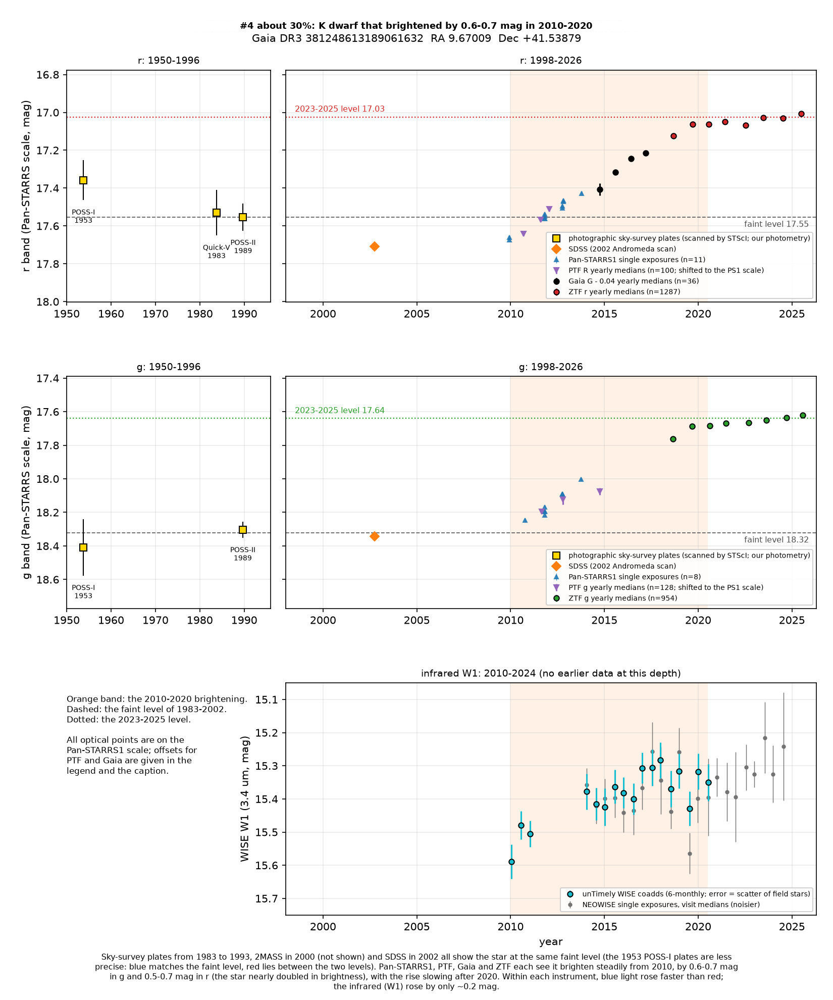
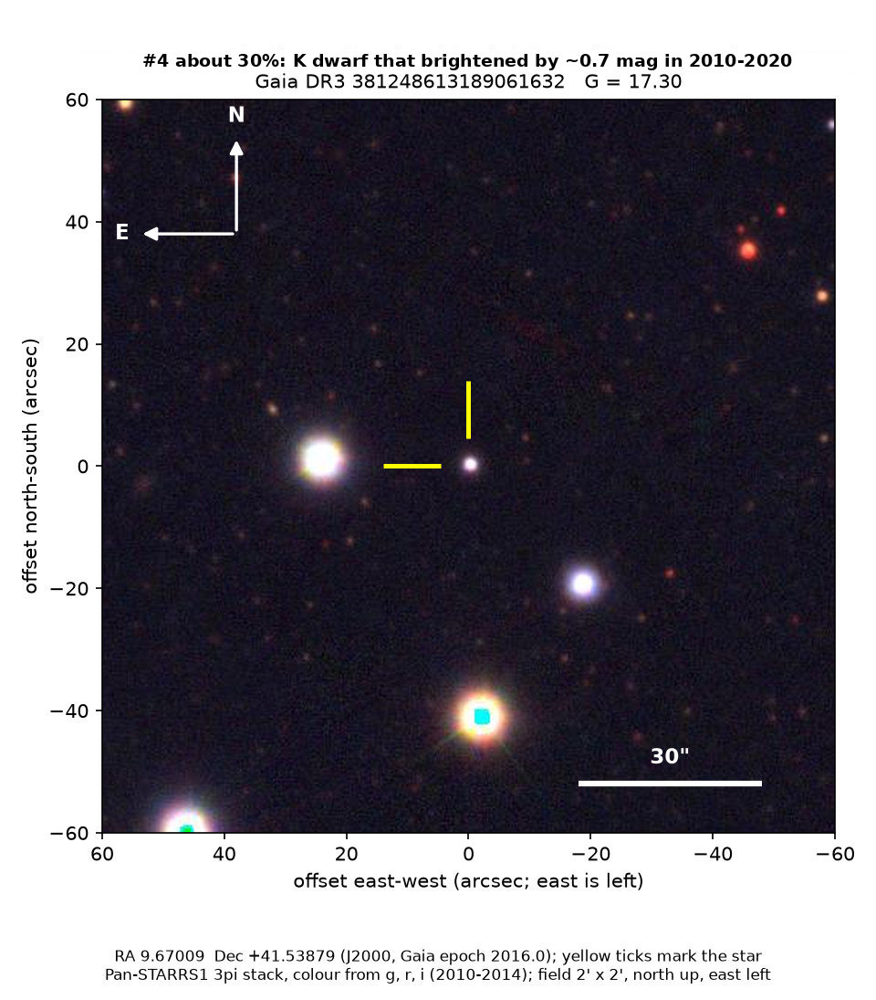
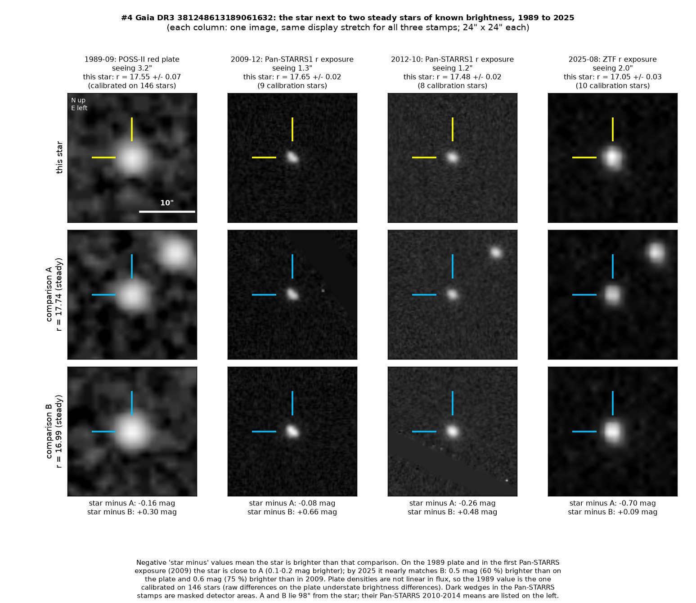

Professor of Mathematics
Paata Ivanisvili
Department of Mathematics, University of California, Irvine

Candidate 4: an orange dwarf that brightened for a decade
Why this estimate. The decade-long rise is certainly real. But ZTF shows a small repeating wobble in brightness, most likely every 1.19 days, which marks the star as fast-spinning and magnetically active, probably a close binary. Other spotted active stars have changed by comparable amounts, so a giant starspot cycle is the likelier cause. What still favours dust is the one-way rise after decades at one level, and a normal ultraviolet brightness while the star was faint.
How to read the pictures. The finder chart shows a patch of sky two arcminutes across, about a fifteenth of the Moon’s width, with north up and east to the left. The star sits between the two yellow ticks, and the white bar is 30 arcseconds long. On a light curve the vertical axis is magnitude, a brightness scale on which larger numbers mean fainter stars, and it is drawn so that down means fainter. Orange shading marks the change. Each survey uses slightly different filters, so each is compared with its own normal level.

What changed. The star is an orange dwarf, a K star, cooler and smaller than the Sun, in the constellation Andromeda. It lies 0.8 degrees north-west of the centre of the Andromeda Galaxy, but it is a Milky Way star in front of that galaxy, not part of it. Gaia estimates a temperature of about 4,900 K and a low content of heavy elements, about a tenth of the Sun’s. The star is about 1.3 to 1.9 kiloparsecs (4,000 to 6,000 light-years) away and 500 to 700 parsecs below the plane of the Milky Way, so it is probably old.
For at least 20 years it stayed at one faint level: photographic plates from 1983, 1989 and 1993, the 2MASS survey in 2000 and the Sloan survey in 2002 all agree. From about 2010 it brightened steadily, and four surveys followed the rise: Pan-STARRS1 from 2009 to 2014, the Palomar Transient Factory from 2010 to 2014, Gaia from 2014 to 2017 and ZTF from 2018 to 2025. By 2020 the star was 0.6 to 0.7 magnitudes brighter in green light and 0.5 to 0.7 magnitudes brighter in red light, which is 60 to 90 per cent more light. Since 2020 the rise has almost stopped, at about 0.01 magnitudes per year. In the infrared, at 3.4 microns, the star brightened by only about 0.2 magnitudes. The 1953 plates are less precise, and they disagree with each other: the blue plate shows the faint level, and the red plate a level between faint and bright.
Why it might matter. Ordinary, slowly spinning dwarf stars do not brighten by more than half a magnitude over a decade. Magnetic activity cycles change such stars by a few hundredths of a magnitude, up to about 0.1, and the change repeats. This change is several times larger and has gone one way only. Within each survey the star became bluer as it brightened, with blue light rising faster than red. From night to night it varies only slightly: by 0.001 to 0.006 magnitudes within a month in Gaia, and by about 0.02 in ZTF. Analysed one observing season at a time, however, the ZTF data from 2018 to 2025 show a small repeating wobble of about 2 per cent, larger in green than in red, as starspots produce. The same period comes back in 9 of 16 data sets, each covering one season in one colour, whereas none of 30 nearby stars of the same brightness, analysed in the same way, repeats a period in more than five. The period is most likely 1.19 days, but because ZTF observes once a night, 0.86 days and 6.1 days cannot be excluded. Any of these means that the star rotates fast, so it is magnetically active and spotted. An old K dwarf spins this fast only if a close companion keeps it spinning, so the star is probably a close binary.
That leaves two explanations. The first is dust clearing: a dusty cloud or disc that had dimmed the star for decades moved out of the line of sight. Ordinary interstellar dust would have changed the colours more than observed, but dust with a mixture of small and large grains fits. The second is a change in the star itself. The colours, and the small infrared change, also fit a hotter surface or fewer cool, dark spots. The star would have to be about 550 K hotter, 11 per cent, which means about 50 per cent more light, or to have lost dark spots covering half to nine tenths of its surface. Ordinary dwarf stars do neither in a decade. Fast-spinning, magnetically active dwarfs, often close binaries, are the exception: their average brightness drifts over decades as the spot cover changes. Against that reading, the star had a normal ultraviolet brightness in the 2000s, while it was still faint and its spots should have been at their strongest, and its Gaia spectrum shows no hydrogen-alpha emission, although that is a weak test at this brightness. It also rose one way for a decade after at least 20 years at one level, rather than going up and down.
A comparison with 425 similar dwarf stars makes a starspot cycle the likelier explanation. Ten of them changed by 0.45 magnitudes or more from Pan-STARRS1 to ZTF, and seven of those ten spin fast, this star among them. Measured against field stars of the same colour, two fast-spinning dwarfs brightened by 0.3 to 0.4 magnitudes over those years, and two spotted active binaries by 0.6 to 0.8. On the same measure this star brightened by about 0.5 magnitudes. Dust is still favoured by the one-way rise after decades at one level and by the normal ultraviolet brightness while the star was faint, but nothing shows the dust directly.
SIMBAD and VSX (the variable-star index) list nothing known about the star, and Gaia’s variability summary assigns it no class. Gaia’s fit to its motion on the sky is that of a normal single star (its single-star statistic, RUWE, is 1.02). There is no other Gaia source within 15 arcseconds, and no star moving with it within 2 arcminutes. Catalogues from ROSAT, XMM-Newton and Chandra for this part of the sky, and Swift ultraviolet catalogues, show nothing. An XMM-Newton image from 2017 does not detect the star, so it is not a strong X-ray source: the limit is below about 1030 erg/s. Its GALEX ultraviolet brightness is normal for an orange dwarf of this colour, compared with 238 similar stars, so there is no sign of strong activity or of a hot companion. Forty-one stars of similar brightness within 6 arcminutes do not show the trend in the Palomar Transient Factory data, so it is not a calibration drift. Measured directly against two steady neighbours in the same images, the star brightens by the same amount as in the survey catalogues.
- Star
- Gaia DR3 381248613189061632, an orange K dwarf
- Location
- RA 9.67009°, Dec +41.53879° (J2000), in Andromeda, 0.8 degrees north-west of the Andromeda Galaxy; a foreground Milky Way star, not part of that galaxy
- Distance
- about 1.3 to 1.9 kiloparsecs (4,000 to 6,000 light-years), uncertain by about 20 per cent
- Brightness
- Gaia G = 17.30
- Probability
- This candidate is unconfirmed. The percentage under the title is an estimate of the chance that it is a real, previously unrecorded case of the kind described. The estimate has not been checked by outside experts. See the introduction to all twelve candidates.
- Caveat
- LAMOST and the Sloan survey, the public archives checked for a spectrum, have none of this star, so its type and the cause of the change rest on Gaia’s colours. The faint level before 2010 comes from photographic plates, precise to 0.05 to 0.12 magnitudes, and from one Sloan visit; an independent scan of the same plates agrees within the errors. The rotation period is uncertain (1.19, 0.86 or 6.1 days). A rare kind of variable star that behaves like this cannot be ruled out.

